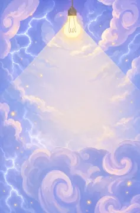
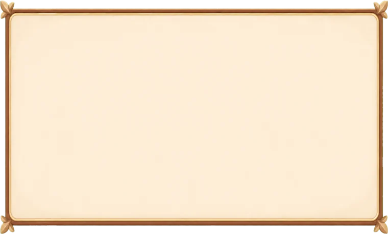
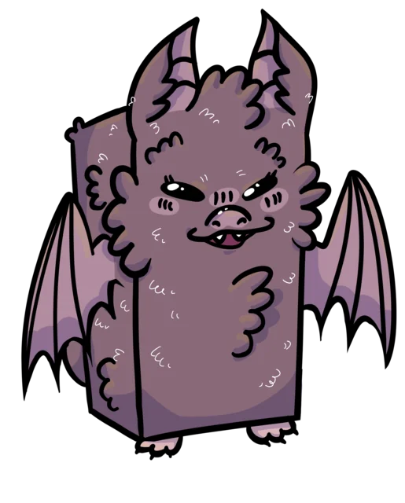

Ball is God?! Xoay tháp. Trở thành cú va chạm.
Một trò chơi arcade đi xuống theo chiều dọc hạng nặng, nơi kéo ngang xoay tòa tháp quanh Espa đang rơi. Bỏ qua các cú hạ cánh an toàn, nạp một đòn đập combo và xuyên qua một thế giới thần thoại, nơi một cú đánh không phòng bị sẽ kết thúc lượt chơi.
Đang sản xuất tích cực: mười cảnh địa điểm, boss, hội thoại rẽ nhánh và các nhánh karma thay đổi luật chơi.
Xoaykéo tháp xung quanh Espa
Rủi robỏ qua ba lần hạ cánh an toàn
Đập vỡxuyên thủng bục
Bên trong bản dựng hiện tại
Karma thay đổi nhiều hơn lời thoại.
Các nhánh karma ánh sáng, trung lập và bóng tối làm thay đổi hành vi của khiên, báo hiệu cảnh báo, độ hung hãn của kẻ thù và các pha của boss, nên câu chuyện thay đổi cách bạn chơi.
Trạng thái bản dựng Sản xuất tích cựcTất cả mười thế giới đối thoại
Hình nền hội thoại cho cả mười thế giới, theo thứ tự lao xuống từ Ena đến Deka.





Giao diện sản xuất hiện tại
Màn chọn màn chơi, hội thoại và màn hình kết quả trong bản dựng hiện tại.
Đây là luồng hiện tại theo đúng thứ tự bạn sẽ gặp: chọn màn chơi, hội thoại, một lựa chọn quan trọng, rồi đến chiến thắng hoặc một màn hình thất bại riêng. Mọi hình ảnh bên dưới đều dùng mỹ thuật từ dự án Unity sản xuất.
Lộ trình thiên thể chọn các màn được tạo trong mười chương, mỗi chương 100 màn chơi.
Menu sản xuất hiển thị mười địa điểm trong các chương 100 màn chơi và mở thẳng vào lượt chơi đã chọn.

 201
201Hội thoại diễn ra ngay trong địa điểm.
Chân dung nhân vật, mỹ thuật địa điểm và bảng tên người nói chung một khung dọc.


Shash
Vậy thì hãy tiếp tục - nhưng đừng nghĩ rằng nó sẽ dễ dàng. Trials đang chờ bạn điều đó sẽ khiến mọi thứ trước đó dường như chỉ là chuyện vặt.
04/ Lựa chọn cột mốc
Câu trả lời trở thành một phần của quá trình đi xuống.
Ở màn 90 và 100 của địa phương, bảng chuyên trách yêu cầu quyết định tha hay giết trước khi hội thoại kết thúc lượt chơi.

Tha
Giết
05 / Menu kết quả
Chiến thắng tiếp tục. Thất bại trở lại với thử thách tương tự.
Bản dựng hiện tại có hai trạng thái kết quả riêng biệt: PanelWin cung cấp tính năng phát lại và cấp độ tiếp theo, trong khi PanelOver giữ một hành động phát lại không thể nhầm lẫn.
Chiến thắng · PanelWin
Đã hoàn thành lượt xuống
 Chơi lại
Tiếp theo
Chơi lại
Tiếp theo
Chơi lại
Tiếp theo
Nhân vật hội thoại
Những khuôn mặt gặp nhau trên đường đi xuống.
Tất cả 25 nhân vật có cặp chân dung đóng và mở hợp lệ được sản xuất đều được bao gồm bên dưới. Di chuột hoặc tập trung vào thẻ để chuyển đổi biểu cảm.





Tổng quan về trò chơi
Ball is God?! là game arcade đầy thử thách về việc rơi xuyên qua một tòa tháp đang xoay.
Ý tưởng
Dẫn Espa xuống một tòa tháp thần thánh. Chỉ một sai lầm cũng có thể kết thúc lượt chơi, và những lựa chọn lớn của bạn thay đổi cách thế giới vận hành.
Bản dựng hiện tại
Mười cảnh địa điểm, tạo tháp theo quy trình, đòn đập combo, vuốt lá chắn, cấu hình trùm, đối thoại phân nhánh, menu sản xuất và chân dung sẵn sàng biểu cảm đều được triển khai.
Đối tượng
Người chơi thích game arcade di động khó, nhịp độ đánh đổi rủi ro lấy phần thưởng và boss, kèm một câu chuyện để theo dõi.
Trạng thái
Đang sản xuất tích cực. Công việc gần đây gồm các hệ thống chạy game, mỹ thuật thế giới, thử nghiệm và cảm giác chơi trên điện thoại.
Tính năng
Bạn làm gì trong Ball is God?!
Lao xuống bằng cách kéo để xoay
Lực kéo ngang xoay tòa tháp xung quanh Espa đang rơi tự động, sắp xếp các khoảng trống, mối nguy hiểm và nền tảng an toàn.
Áp lực arcade đầy thử thách
Chỉ một cú trúng khi không có khiên là kết thúc lượt chơi, nên bạn phải đọc tòa tháp và canh nhịp từng chuyển động.
Boss và thế giới huyền thoại
Mười cảnh địa điểm, mỗi cảnh có boss riêng, dẫn câu chuyện đi từ thế giới này sang thế giới khác.
Lựa chọn làm thay đổi luật chơi
Đối thoại thay đổi lòng thương xót, lực lượng và karma, quy tắc khiên, mức độ hung hăng của kẻ thù, tín hiệu cảnh báo và các pha đánh trùm.
Vòng lặp trò chơi
Cách chơi Ball is God?!
- Bước 01Đọc đường xuống
Quét các bệ đỡ, khoảng trống và mối nguy phía dưới, và tìm những khoảnh khắc an toàn để hành động khi bạn rơi.
- Bước 02Xoay tháp
Lực kéo ngang xoay thế giới quanh Espa, căn chỉnh một nền tảng an toàn hoặc khoảng trống có chủ ý.
- Bước 03Rủi ro và đập phá
Bỏ qua ba bệ để nạp đòn đập combo, sau đó xuyên thủng cấu trúc trong khi tấm khiên che một sai lầm chết người.
- Bước 04Chọn hậu quả
Lòng thương xót và sức mạnh định hình karma, đối thoại và các quy tắc chơi game áp dụng vào kẻ thù và trùm.
Câu chuyện / thế giới
Tòa tháp huyền thoại nơi mọi lựa chọn của bạn bám theo bạn xuống tận đáy.
Ball is God?! bắt đầu từ niềm đam mê thời thơ ấu với các trò chơi di động đi xuống theo chiều dọc: đọc khoảng trống, phản ứng nhanh chóng và sống sót theo bản năng.
Thể loại này có thể gánh nhiều hơn thế: boss, nhân vật có cá tính, một câu chuyện và những giằng xé đạo đức. Dự án hiện tại đi cùng Espa qua mười cảnh địa điểm và một dàn nhân vật kỳ lạ, với những lựa chọn làm thay đổi cả câu chuyện lẫn lối chơi.
Vì vậy mục tiêu trở thành một game arcade lao xuống theo chiều dọc đơn giản, với áp lực của một trận đấu boss và hệ quả của một game nhập vai dẫn dắt bằng cốt truyện.
- Tầm nhìn
- Game arcade tháp xoay với câu chuyện huyền thoại
- Phạm vi thế giới hiện tại
- Mười địa điểm và cấu hình boss
- Giai đoạn câu chuyện
- Hoàn thành bản thảo truyện dài
- Tình trạng sản xuất
- Sản xuất tích cực
Tóm tắt nhanh
Điều khiển kéo đơn giản, cùng một câu chuyện làm thay đổi luật chơi.
Điều khiển kéo để xoay phản hồi ngay lập tức. Phần còn lại đến từ các thế giới huyền thoại, boss và những lựa chọn làm thay đổi lối chơi.
Bản dựng hiện tại đã kết hợp việc tạo tháp theo quy tắc cố định, đòn đập đánh đổi rủi ro lấy phần thưởng, thất bại chỉ sau một đòn, boss, hội thoại rẽ nhánh và karma làm thay đổi lối chơi.
- Thể loại
- Arcade lao xuống theo chiều dọc dẫn dắt bằng cốt truyện
- Mục tiêu nền tảng
- iOS / Android
- Cấu trúc lượt chơi
- Lượt chơi nhanh dựa trên kỹ năng
- Studio
- WillowinWorlds
Tải tài nguyên xuống
Ball is God?! tài nguyên báo chí và người sáng tạo
Bản xem trước WebP dành cho đưa tin, nhà phát hành xem xét và tham chiếu trang cửa hàng. Có thể cung cấp tệp nguồn độ phân giải đầy đủ khi có yêu cầu.
Thương hiệu và nhân vật
Biểu tượng trò chơi cộng với tất cả 25 nhân vật hiện tại có chân dung hội thoại hoàn chỉnh trong quá trình sản xuất. Tên khớp với khóa bản địa hóa Unity.
EspaChân dung nhân vật người chơi.
RevlaChân dung hội thoại sản xuất.
ShashChân dung hội thoại sản xuất.
ShushChân dung hội thoại sản xuất.
ShishChân dung hội thoại sản xuất.
GigoChân dung hội thoại sản xuất.
GogaChân dung hội thoại sản xuất.
GigaChân dung hội thoại sản xuất.
AskoldChân dung hội thoại sản xuất.
MirasChân dung hội thoại sản xuất.
HihChân dung hội thoại sản xuất.
HehChân dung hội thoại sản xuất.
HahChân dung hội thoại sản xuất.
MusyaChân dung hội thoại sản xuất.
DusyaChân dung hội thoại sản xuất.
SusyaChân dung hội thoại sản xuất.
VladusChân dung hội thoại sản xuất.
FrishaChân dung hội thoại sản xuất.
LurenChân dung hội thoại sản xuất.
KurenChân dung hội thoại sản xuất.
Don YagonChân dung hội thoại sản xuất.
LuryaChân dung hội thoại sản xuất.
KhleyaChân dung hội thoại sản xuất.
VaronChân dung hội thoại sản xuất.
WhiteChân dung hội thoại sản xuất.
Nền menu
Tác phẩm nghệ thuật sản xuất hiện tại được sử dụng bởi hệ thống lựa chọn cấp độ thiên thể.
 Menu thiên giới
Menu thiên giới

Thế giới lao xuống theo chiều dọc
Bộ hoàn chỉnh gồm mười hình nền địa điểm hiện tại, được sắp xếp từ Ena đến Deka.
 01 · Thế giới bầu trờiNền lao xuống theo chiều dọc của Ena.
01 · Thế giới bầu trờiNền lao xuống theo chiều dọc của Ena.
 02 · Thế giới không gianNền lao xuống theo chiều dọc của Dyo.
02 · Thế giới không gianNền lao xuống theo chiều dọc của Dyo.
 03 · Thế giới bão tốNền lao xuống theo chiều dọc của Tria.
03 · Thế giới bão tốNền lao xuống theo chiều dọc của Tria.
 04 · Thế giới tuyếtNền lao xuống theo chiều dọc của Tessera.
04 · Thế giới tuyếtNền lao xuống theo chiều dọc của Tessera.
 05 · Thế giới núi lửaNền Pente; chuyển động trong game.
05 · Thế giới núi lửaNền Pente; chuyển động trong game.
 06 · Thế giới đại dươngNền lao xuống theo chiều dọc của Eksi.
06 · Thế giới đại dươngNền lao xuống theo chiều dọc của Eksi.
 07 · Thế giới sa mạcNền lao xuống theo chiều dọc của Epta.
07 · Thế giới sa mạcNền lao xuống theo chiều dọc của Epta.
 08 · Thế giới rừngNền lao xuống theo chiều dọc của Ohto.
08 · Thế giới rừngNền lao xuống theo chiều dọc của Ohto.
 09 · Thế giới hang độngNền lao xuống theo chiều dọc của Ennea.
09 · Thế giới hang độngNền lao xuống theo chiều dọc của Ennea.
 10 · Thế giới địa ngụcNền lao xuống theo chiều dọc của Deka.
10 · Thế giới địa ngụcNền lao xuống theo chiều dọc của Deka.
Nền arcade cốt truyện
Bộ địa điểm hội thoại hoàn chỉnh: Sảnh Ánh sáng cộng với hình nền cho cả mười thế giới.
 00 · Sảnh Ánh SángNền hội thoại mở đầu.
00 · Sảnh Ánh SángNền hội thoại mở đầu.
 01 · Đối thoại bầu trờiNền cốt truyện của Ena.
01 · Đối thoại bầu trờiNền cốt truyện của Ena.
 02 · Đối thoại không gianNền cốt truyện của Dyo.
03 · Đối thoại giông bãoNền cốt truyện của Tria.
02 · Đối thoại không gianNền cốt truyện của Dyo.
03 · Đối thoại giông bãoNền cốt truyện của Tria.

 04 · Đối thoại tuyếtNền cốt truyện của Tessera.
04 · Đối thoại tuyếtNền cốt truyện của Tessera.
 05 · Đối thoại núi lửaNền cốt truyện của Pente.
05 · Đối thoại núi lửaNền cốt truyện của Pente.
 06 · Đối thoại đại dươngNền cốt truyện của Eksi.
06 · Đối thoại đại dươngNền cốt truyện của Eksi.
 07 · Đối thoại sa mạcNền cốt truyện của Epta.
07 · Đối thoại sa mạcNền cốt truyện của Epta.
 08 · Đối thoại trong rừngNền cốt truyện của Ohto.
08 · Đối thoại trong rừngNền cốt truyện của Ohto.
 09 · Đối thoại trong hang độngNền cốt truyện của Ennea.
09 · Đối thoại trong hang độngNền cốt truyện của Ennea.
 10 · Đối thoại địa ngụcNền cốt truyện của Deka.
10 · Đối thoại địa ngụcNền cốt truyện của Deka.
Câu hỏi thường gặp về Ball is God?!
Câu hỏi thường gặp về Ball is God?!
Ball is God?! là loại trò chơi gì
Game arcade lao xuống theo chiều dọc đầy thử thách. Bạn xoay tòa tháp quanh Espa đang rơi, bỏ qua những điểm tiếp đất an toàn để nạp đòn đập và xuyên qua các thế giới huyền thoại.
Chơi Ball is God?! như thế nào?
Kéo ngang để xoay tháp, bỏ qua ba bệ để nạp một đòn đập combo và vuốt dọc khi lá chắn hồi chiêu phải hấp thụ một đòn chí mạng.
Ball is God?! đã ra mắt chưa?
Chưa. Game đang được sản xuất tích cực ở các mảng hệ thống chạy game, mỹ thuật thế giới, nội dung cốt truyện và thử nghiệm. Chưa có ngày phát hành công khai. Nền tảng mục tiêu là iOS và Android.
Ball is God?! khác biệt ở điểm nào?
Game kết hợp áp lực arcade kiểu đánh đổi rủi ro lấy phần thưởng với mười địa điểm và karma làm thay đổi hội thoại, kẻ thù, báo hiệu đòn đánh, khiên và boss.
Ai làm ra Ball is God?!
WillowinWorlds, một studio độc lập làm game giải đố và arcade trên di động.
Tôi có thể dùng tài nguyên báo chí của Ball is God?! không?
Được, cho báo chí, nhà phát hành xem xét và tham chiếu trên cửa hàng. Tệp nguồn được giữ riêng tư trừ khi bạn yêu cầu chúng tôi.
Nhật ký phát triển Ball is God?!
Điều gì đã thay đổi và khi nào
- Kiểm tra bề mặt thế giới và mối nguy hiểm
Phần trình bày nhân vật, cách sinh màn theo quy tắc cố định và bẫy gai được rà soát chung cả về hình ảnh lẫn kiểm chứng.
- Tháng 7 năm 2026Đợt hoàn thiện giao diện sản xuất và nhân vật
Màn chọn màn chơi, điều khiển hành động dùng chung, khung hội thoại dọc và biểu cảm nhân vật theo cặp nay đã hoàn thiện.
- Tháng 2 năm 2026Đánh giá phạm vi dự án
Nhóm đã hoàn thành đợt tích hợp cốt truyện chính và rà soát toàn bộ quy mô dự án: mười thế giới, lựa chọn đạo đức, trùm và nhiều kết thúc.
- Tháng 4-Tháng 5 năm 2025Viết lại câu chuyện và khả năng
Toàn bộ câu chuyện được viết lại, khả năng của nhân vật được cải thiện và hậu quả đạo đức trở nên rõ ràng hơn.
- Tháng 8 năm 2024Hướng câu chuyện bắt đầu
Nhóm quyết định Ball is God?! nên là hơn một game arcade lao xuống đơn giản và bổ sung một câu chuyện huyền thoại cùng tầm nhìn về những lựa chọn đạo đức.
- Tháng 7 năm 2024Ý tưởng ban đầu
Dự án bắt đầu như ý tưởng game đầu tiên của studio: một game arcade dọc nhịp độ nhanh về việc rơi xuyên một tòa tháp thần thánh.
- Bản dựng hiện tạiArcade và cốt truyện trong cùng một bản dựng
Cuộc lao xuống tháp xoay, đòn đập combo, khiên vuốt, boss, hội thoại và karma nay đã hoạt động cùng nhau trong một bản dựng.